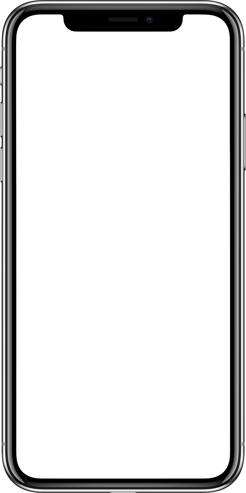
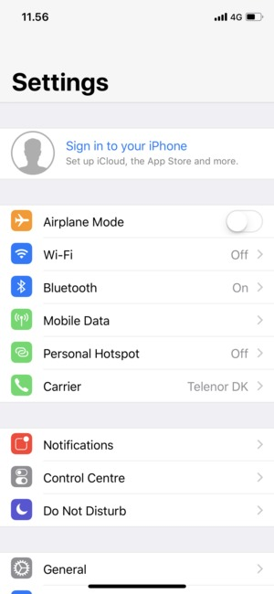
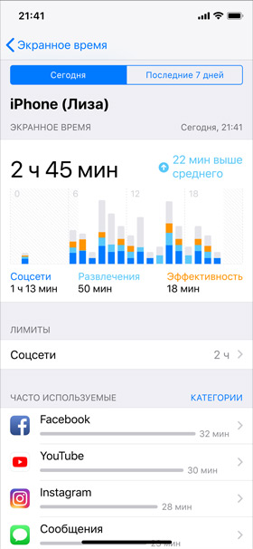

Шаг 1
Открыть приложение «Настройки»
Заходим в «Настройки», нажав на значок шестеренок на главном экране

Шаг 2
Открыть раздел «Сотовые данные»
На главном экране настроек выбираем раздел «Сотовые данные»

Шаг 3
Открыть раздел «Сотовая сеть передачи данных»
Выбираем раздел «Сотовая сеть передачи данных»
Шаг 4
Сбросить и добавить новую Точку Доступа
Пробуем нажать на «Сбросить настройки»
Обычно после этого профиль восстанавливается
Если не помогло, то вносим настройки:
Имя: Tinkoff
APN: m.tinkoff
Имя пользователя: пусто
Пароль: пусто
Тип подключения: пусто
Прокси: пусто
Порт: пусто
Сервер: пусто
Тип APN: пусто
Перезагружаем телефон и
пробуем открыть интернет страницу